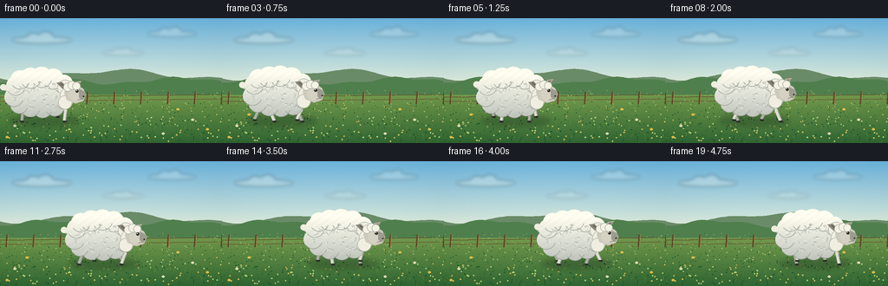
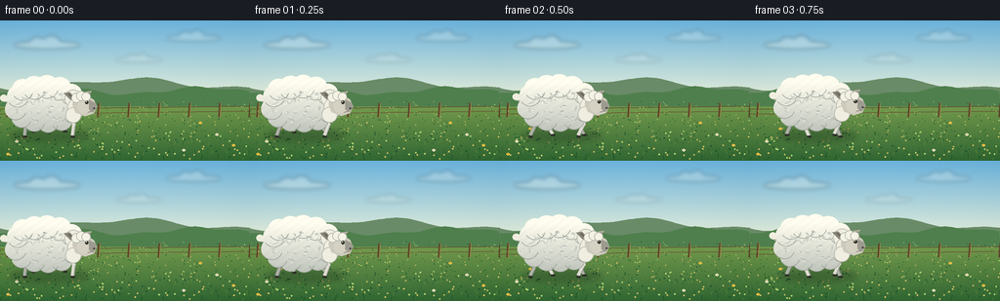

CODING AGENTS AS PIXEL WORLD MODELS
traex/GPT-5.6-Sol · instance_preservation_0015
点击播放 · 原生 RGB 像素
逐轮保存的候选
回放视频、检查图与代码变化。
每份候选均可单独播放。实际图片检查记录在下方工具轨迹中。
候选 01播放与检查图
点击播放 · 原生 RGB 像素


展开代码变化
--- 上一保存版本
+++ 本次保存版本
@@ -0,0 +1,263 @@
+from pathlib import Path
+import math
+import numpy as np
+from PIL import Image, ImageDraw, ImageFilter
+import artifact_io
+
+# PixelWorld text-to-video: "A white sheep is walking."
+# Deterministic, purely procedural 3x supersampled rendering.
+W, H, N, FPS = 256, 144, 20, 4.0
+S = 3
+SW, SH = W*S, H*S
+CASE_DIR = Path(__file__).resolve().parent
+
+
+def sc(v):
+ return int(round(v*S))
+
+def box(b):
+ return tuple(sc(v) for v in b)
+
+def pts(p):
+ return [(sc(x), sc(y)) for x, y in p]
+
+def ellipse(d, b, fill, outline=None, width=1):
+ d.ellipse(box(b), fill=fill, outline=outline, width=max(1, sc(width)))
+
+def polygon(d, p, fill):
+ d.polygon(pts(p), fill=fill)
+
+def line(d, p, fill, width=1, joint="curve"):
+ d.line(pts(p), fill=fill, width=max(1, sc(width)), joint=joint)
+
+def make_base():
+ """Stable atmospheric countryside plate. All stochastic details are seeded."""
+ rng = np.random.default_rng(104729)
+ yy = np.arange(SH)[:, None]
+ xx = np.arange(SW)[None, :]
+ arr = np.zeros((SH, SW, 3), dtype=np.float32)
+
+ horizon = sc(77)
+ # Clear spring sky: deeper cyan overhead, ivory at the horizon.
+ q = np.clip(yy / horizon, 0, 1)
+ top = np.array([109, 180, 221], dtype=np.float32)
+ bot = np.array([226, 237, 218], dtype=np.float32)
+ sky = top[None, None, :] * (1-q[:, :, None]) + bot[None, None, :] * q[:, :, None]
+ arr[:] = sky
+ # Meadow gradient, sunlit at its crown and darker near the camera.
+ qg = np.clip((yy-horizon) / (SH-horizon), 0, 1)
+ meadow_top = np.array([128, 164, 82], dtype=np.float32)
+ meadow_bot = np.array([51, 104, 53], dtype=np.float32)
+ grass = meadow_top[None, None, :] * (1-qg[:, :, None]) + meadow_bot[None, None, :] * qg[:, :, None]
+ arr[horizon:] = grass[horizon:]
+
+ # Gentle vignette and fine film/vegetation texture (constant over time).
+ cx, cy = SW*.49, SH*.46
+ vig = ((xx-cx)/(SW*.75))**2 + ((yy-cy)/(SH*.92))**2
+ arr -= 8.0*np.clip(vig, 0, 1)[:, :, None]
+ noise = rng.normal(0, 1.1, (SH, SW, 1))
+ arr += noise
+ im = Image.fromarray(np.clip(arr, 0, 255).astype(np.uint8), "RGB").convert("RGBA")
+ d = ImageDraw.Draw(im, "RGBA")
+
+ # Far clouds: soft, subtle and deliberately not pure white (sheep remains focal).
+ cloud_layer = Image.new("RGBA", (SW, SH), (0,0,0,0))
+ cd = ImageDraw.Draw(cloud_layer, "RGBA")
+ for cx0, cy0, rw, rh, a in [(48,25,34,8,70),(198,18,28,7,55),(142,40,24,5,42)]:
+ ellipse(cd, (cx0-rw,cy0-rh/2,cx0+rw,cy0+rh/2), (246,248,238,a))
+ ellipse(cd, (cx0-rw*.52,cy0-rh,cx0-rw*.05,cy0+rh*.35), (250,250,241,a))
+ ellipse(cd, (cx0-rw*.12,cy0-rh*1.2,cx0+rw*.38,cy0+rh*.35), (250,250,241,a))
+ cloud_layer = cloud_layer.filter(ImageFilter.GaussianBlur(sc(2.0)))
+ im = Image.alpha_composite(im, cloud_layer)
+ d = ImageDraw.Draw(im, "RGBA")
+
+ # Layered foothills for depth.
+ hill1 = [(0,77)]
+ for x in range(0, 257, 4):
+ y = 65 + 5*math.sin(x*.027+1.1) + 2.2*math.sin(x*.071)
+ hill1.append((x,y))
+ hill1 += [(256,83),(0,83)]
+ polygon(d, hill1, (105,139,103,255))
+ hill2 = [(0,82)]
+ for x in range(0, 257, 3):
+ y = 72 + 3.5*math.sin(x*.041+2.5) + 1.4*math.sin(x*.12)
+ hill2.append((x,y))
+ hill2 += [(256,88),(0,88)]
+ polygon(d, hill2, (79,127,77,255))
+
+ # A distant fence strengthens the sense of forward travel.
+ line(d, [(0,91),(256,88)], (92,78,48,130), 1.0)
+ line(d, [(0,96),(256,93)], (104,87,52,120), 1.0)
+ for x in range(8, 260, 31):
+ line(d, [(x,84.5),(x-1,99)], (91,71,41,175), 2.0)
+ line(d, [(x+1,84.5),(x,99)], (169,136,78,90), .55)
+
+ # Distant field stipple and seed heads.
+ for _ in range(420):
+ x = float(rng.uniform(0,256)); y = float(rng.uniform(83,142))
+ depth = (y-83)/59
+ col = [(44,102,48,85),(204,191,102,65),(27,84,45,70),(183,215,119,55)][int(rng.integers(4))]
+ r = .25 + depth*.55
+ ellipse(d, (x-r,y-r,x+r,y+r), col)
+ # Stable blades, denser and larger toward the foreground.
+ for _ in range(190):
+ x = float(rng.uniform(0,256)); y = float(rng.uniform(101,145))
+ length = float(rng.uniform(1.5,5.2))*((y-90)/54)
+ lean = float(rng.uniform(-1.7,1.7))
+ col = [(37,91,44,130),(78,132,60,140),(120,154,68,105),(28,79,43,130)][int(rng.integers(4))]
+ line(d, [(x,y),(x+lean,y-length)], col, .45)
+ # A few legible wildflowers around, never over the sheep's body.
+ flowers = [(17,124,'w'),(31,111,'y'),(222,117,'w'),(239,128,'y'),(205,105,'y'),(8,137,'y'),(188,133,'w')]
+ for x,y,c in flowers:
+ line(d, [(x,y+4),(x,y)], (38,100,48,190), .65)
+ petal=(245,239,206,220) if c=='w' else (246,201,72,225)
+ for a in range(0,360,90):
+ dx=math.cos(math.radians(a))*1.15; dy=math.sin(math.radians(a))*.9
+ ellipse(d,(x+dx-.65,y+dy-.55,x+dx+.65,y+dy+.55),petal)
+ ellipse(d,(x-.48,y-.48,x+.48,y+.48),(163,112,43,230))
+ return im
+
+BASE = make_base()
+
+# Consistent fleece markings sampled once in body-local coordinates.
+_rng = np.random.default_rng(721)
+FLEECE_CURLS = []
+for _ in range(44):
+ # Rejection sample inside the torso oval.
+ while True:
+ x = _rng.uniform(-31,29); y = _rng.uniform(-15,16)
+ if (x/34)**2 + (y/18)**2 < .88:
+ break
+ FLEECE_CURLS.append((x,y,float(_rng.uniform(.65,1.55)),float(_rng.uniform(0,360))))
+
+
+def draw_leg(im, x0, y0, phase, near=False):
+ """Two-bone leg with a planted/swinging hoof trajectory."""
+ d = ImageDraw.Draw(im, "RGBA")
+ swing = math.sin(phase)
+ # Lift during forward swing; rearward stroke stays close to the earth.
+ lift = max(0.0, math.cos(phase))*5.2
+ footx = x0 + 7.2*swing
+ footy = 119.0 - lift
+ kneex = x0 + 2.2*math.sin(phase-.65)
+ kneey = 106.5 - lift*.25
+ wool = (224,222,211,255) if near else (174,178,165,245)
+ shade = (152,157,148,210) if near else (118,127,118,210)
+ # Slim shadow edge, then bright leg.
+ line(d, [(x0,y0),(kneex,kneey),(footx,footy-1)], shade, 4.0)
+ line(d, [(x0-.35,y0),(kneex-.35,kneey),(footx-.3,footy-1.2)], wool, 2.5)
+ ellipse(d,(kneex-1.7,kneey-1.6,kneex+1.7,kneey+1.6),wool)
+ # Dark cloven hoof and tiny toe separation.
+ line(d, [(footx-1.7,footy),(footx+2.6,footy+.3)], (48,49,43,255), 2.2)
+ line(d, [(footx+.3,footy-.3),(footx+1.0,footy+1.0)], (24,28,25,210), .65)
+
+
+def render_frame(i):
+ im = BASE.copy()
+ d = ImageDraw.Draw(im, "RGBA")
+ cycle = 2*math.pi*(i/10.0) # two complete, readable steps in five seconds
+ x = 47.0 + (121.0*i/(N-1))
+ bob = -1.15*abs(math.sin(cycle)) + .25*math.sin(cycle*2)
+ y = 88.0 + bob
+
+ # Soft contact shadow, strongest under torso and hooves.
+ sh = Image.new("RGBA", (SW,SH), (0,0,0,0)); sd=ImageDraw.Draw(sh,"RGBA")
+ ellipse(sd,(x-37,112,x+44,124),(23,50,30,78))
+ sh=sh.filter(ImageFilter.GaussianBlur(sc(3.1)))
+ im=Image.alpha_composite(im,sh); d=ImageDraw.Draw(im,"RGBA")
+
+ # Tail behind the body, wagging subtly with the gait.
+ tail_ang = -.55 + .22*math.sin(cycle+1.1)
+ tx=x-34; ty=y-5
+ tail_tip=(tx-10*math.cos(tail_ang),ty+10*math.sin(tail_ang))
+ line(d,[(tx,ty),tail_tip],(181,181,169,255),7.0)
+ line(d,[(tx,ty-1),tail_tip],(241,239,224,255),5.1)
+ ellipse(d,(tail_tip[0]-3.7,tail_tip[1]-3.5,tail_tip[0]+3.7,tail_tip[1]+3.5),(239,237,222,255))
+
+ # Four legs: far diagonal pair first, then near pair. Torso will naturally occlude tops.
+ draw_leg(im,x-22,y+10,cycle+math.pi,False)
+ draw_leg(im,x+19,y+10,cycle,False)
+ draw_leg(im,x-13,y+11,cycle,True)
+ draw_leg(im,x+27,y+10,cycle+math.pi,True)
+
+ # Fleece mask with a stable scalloped silhouette.
+ mask=Image.new("L",(SW,SH),0); md=ImageDraw.Draw(mask)
+ ellipse(md,(x-37,y-19,x+31,y+20),255)
+ puffs=[(-29,-10,11),(-24,-17,11),(-12,-19,12),(1,-20,12),(14,-18,12),(26,-12,11),
+ (-31,3,11),(-25,12,10),(-12,15,11),(2,16,11),(16,14,11),(27,7,10),(30,-1,9)]
+ for ox,oy,r in puffs:
+ ellipse(md,(x+ox-r,y+oy-r,x+ox+r,y+oy+r),255)
+ # Warm top-to-cool-bottom fleece shading, with subtle fixed grain.
+ a=np.zeros((SH,SW,4),dtype=np.uint8)
+ m=np.asarray(mask)
+ ys=np.arange(SH)[:,None]/S
+ shade=np.clip((ys-(y-23))/47,0,1)
+ top=np.array([255,253,239.],dtype=float); bottom=np.array([194,199,190.],dtype=float)
+ rgb=top[None,None,:]*(1-shade[:,:,None])+bottom[None,None,:]*shade[:,:,None]
+ rgb=np.repeat(rgb,SW,axis=1)
+ # Very low contrast deterministic-looking microtexture tied to absolute image.
+ texture=2.0*np.sin(np.arange(SW)[None,:]*.19 + np.arange(SH)[:,None]*.27)
+ rgb += texture[:,:,None]
+ a[:,:,:3]=np.clip(rgb,0,255).astype(np.uint8); a[:,:,3]=m
+ fleece=Image.fromarray(a,"RGBA")
+ im=Image.alpha_composite(im,fleece); d=ImageDraw.Draw(im,"RGBA")
+
+ # Scallop boundary accents keep the animal readable against pale sky/hills.
+ for ox,oy,r in puffs:
+ # Only short lower-right arcs: a wool edge, not cartoon outlines.
+ d.arc(box((x+ox-r,y+oy-r,x+ox+r,y+oy+r)),20,145,fill=(150,157,149,95),width=sc(.65))
+ # Fine fleece curls, fixed from frame to frame.
+ for ox,oy,r,ang in FLEECE_CURLS:
+ bb=(x+ox-r*1.5,y+oy-r,x+ox+r*1.5,y+oy+r)
+ d.arc(box(bb),int(ang),int(ang+155),fill=(139,149,143,74),width=max(1,sc(.48)))
+ d.arc(box((bb[0],bb[1]-.35,bb[2],bb[3]-.35)),int(ang+180),int(ang+290),fill=(255,255,248,85),width=max(1,sc(.38)))
+
+ # Neck fleece bridge.
+ for ox,oy,r in [(28,-8,9),(31,1,9),(28,9,8)]:
+ ellipse(d,(x+ox-r,y+oy-r,x+ox+r,y+oy+r),(239,238,224,255),(174,178,168,120),.65)
+
+ # Head and ears follow the body but nod independently.
+ nod=.7*math.sin(cycle+.4)
+ hx=x+39; hy=y-1+nod
+ # Far ear first, a long leaf silhouette.
+ far_ear=[(hx-8,hy-7),(hx-15,hy-14),(hx-21,hy-13),(hx-14,hy-6)]
+ polygon(d,far_ear,(135,132,119,255))
+ line(d,[(hx-16,hy-12),(hx-10,hy-7)],(96,91,82,190),1)
+ # Tapered pale-gray face, forehead to dark muzzle.
+ face=[(hx-10,hy-10),(hx+2,hy-11),(hx+10,hy-6),(hx+13,hy+1),
+ (hx+10,hy+8),(hx+1,hy+11),(hx-9,hy+7),(hx-12,hy-1)]
+ polygon(d,face,(205,202,188,255))
+ # Soft facial planes.
+ ellipse(d,(hx-7,hy-8,hx+7,hy+8),(213,210,195,210))
+ polygon(d,[(hx+5,hy-6),(hx+11,hy-3),(hx+13,hy+2),(hx+9,hy+7),(hx+5,hy+4)],(157,155,143,180))
+ # Near ear, held almost horizontal; gentle bounce preserves identity.
+ ear_y=hy-8+1.2*math.sin(cycle+.8)
+ near_ear=[(hx-4,ear_y),(hx+1,ear_y-7),(hx+8,ear_y-8),(hx+4,ear_y-2)]
+ polygon(d,near_ear,(183,178,161,255))
+ polygon(d,[(hx,ear_y-2),(hx+2,ear_y-5.8),(hx+6.2,ear_y-6.5),(hx+3.2,ear_y-3)],(124,116,108,175))
+ # Woolly cap overlapping the brow.
+ for ox,oy,r in [(-8,-8,5),(-3,-10,5),(2,-9,4.5)]:
+ ellipse(d,(hx+ox-r,hy+oy-r,hx+ox+r,hy+oy+r),(244,242,228,255),(171,175,165,100),.5)
+ # Eye, highlight, nostril and mouth line.
+ ellipse(d,(hx+1.0,hy-5.0,hx+4.4,hy-1.6),(49,48,42,255))
+ ellipse(d,(hx+1.6,hy-4.5,hx+2.5,hy-3.6),(250,246,224,255))
+ ellipse(d,(hx+9.3,hy+2.2,hx+11.1,hy+3.5),(57,56,49,220))
+ line(d,[(hx+7.5,hy+6.2),(hx+3.6,hy+7.2)],(91,86,78,160),.65)
+
+ # A few foreground blades pass the hooves only, grounding rather than obscuring.
+ fg=ImageDraw.Draw(im,"RGBA")
+ for k in range(9):
+ gx=(18+k*29 + (k*k*7)%17)%256
+ gh=3+(k%4)*1.2
+ line(fg,[(gx,143),(gx+(-1 if k%2 else 1.5),143-gh)],(26,76,40,180),.8)
+ return np.asarray(im.convert("RGB").resize((W,H),Image.Resampling.LANCZOS),dtype=np.uint8)
+
+
+def main():
+ frames=np.stack([render_frame(i) for i in range(N)],axis=0)
+ assert frames.shape==(20,144,256,3) and frames.dtype==np.uint8
+ artifact_io.save(frames,CASE_DIR)
+ print(f"saved {len(frames)} RGB frames: {frames.shape}, {FPS:g} fps")
+
+if __name__=="__main__":
+ main()
可观测工具轨迹
实际执行的命令与返回图片。
命令 1exit 0
/bin/bash -lc "cat prompt.txt && printf '\\n--- GENERATION_RULES.md ---\\n' && cat GENERATION_RULES.md"
命令 2exit 0
/bin/bash -lc "cat task_spec.json && printf '\\n--- FILES ---\\n' && find . -maxdepth 2 -type f -printf '%p\\n' | sort"
命令 3exit 0
/bin/bash -lc "command -v ffmpeg || true; command -v blender || true; python3 - <<'PY' mods=['cv2','numpy','PIL','imageio','skimage','cairo'] for m in mods: try: x=__import__(m); print(m,'OK',getattr(x,'__version__','')) except Exception as e: print(m,'NO',str(e)[:100]) PY"
命令 4exit 0
/bin/bash -lc "sed -n '1,260p' artifact_io.py"
命令 5exit 0
/bin/bash -lc 'find /usr/share/fonts/truetype -type f 2>/dev/null | head -30'
命令 6exit 1
/bin/bash -lc "cat > generate.py <<'PY'
from pathlib import Path
import math
import numpy as np
from PIL import Image, ImageDraw, ImageFilter
import artifact_io
# PixelWorld text-to-video: \"A white sheep is walking.\"
# Deterministic, purely procedural 3x supersampled rendering.
W, H, N, FPS = 256, 144, 20, 4.0
S = 3
SW, SH = W*S, H*S
CASE_DIR = Path(__file__).resolve().parent
def sc(v):
return int(round(v*S))
def box(b):
return tuple(sc(v) for v in b)
def pts(p):
return [(sc(x), sc(y)) for x, y in p]
def ellipse(d, b, fill, outline=None, width=1):
d.ellipse(box(b), fill=fill, outline=outline, width=max(1, sc(width)))
def polygon(d, p, fill):
d.polygon(pts(p), fill=fill)
def line(d, p, fill, width=1, joint=\"curve\"):
d.line(pts(p), fill=fill, width=max(1, sc(width)), joint=joint)
def make_base():
\"\"\"Stable atmospheric countryside plate. All stochastic details are seeded.\"\"\"
rng = np.random.default_rng(104729)
yy = np.arange(SH)[:, None]
xx = np.arange(SW)[None, :]
arr = np.zeros((SH, SW, 3), dtype=np.float32)
horizon = sc(77)
# Clear spring sky: deeper cyan overhead, ivory at the horizon.
q = np.clip(yy / horizon, 0, 1)
top = np.array([109, 180, 221], dtype=np.float32)
bot = np.array([226, 237, 218], dtype=np.float32)
sky = top[None, None, :] * (1-q[:, :, None]) + bot[None, None, :] * q[:, :, None]
arr[:] = sky
# Meadow gradient, sunlit at its crown and darker near the camera.
qg = np.clip((yy-horizon) / (SH-horizon), 0, 1)
meadow_top = np.array([128, 164, 82], dtype=np.float32)
meadow_bot = np.array([51, 104, 53], dtype=np.float32)
grass = meadow_top[None, None, :] * (1-qg[:, :, None]) + meadow_bot[None, None, :] * qg[:, :, None]
arr[horizon:] = grass[horizon:]
# Gentle vignette and fine film/vegetation texture (constant over time).
cx, cy = SW*.49, SH*.46
vig = ((xx-cx)/(SW*.75))**2 + ((yy-cy)/(SH*.92))**2
arr -= 8.0*np.clip(vig, 0, 1)[:, :, None]
noise = rng.normal(0, 1.1, (SH, SW, 1))
arr += noise
im = Image.fromarray(np.clip(arr, 0, 255).astype(np.uint8), \"RGB\").convert(\"RGBA\")
d = ImageDraw.Draw(im, \"RGBA\")
# Far clouds: soft, subtle and deliberately not pure white (sheep remains focal).
cloud_layer = Image.new(\"RGBA\", (SW, SH), (0,0,0,0))
cd = ImageDraw.Draw(cloud_layer, \"RGBA\")
for cx0, cy0, rw, rh, a in [(48,25,34,8,70),(198,18,28,7,55),(142,40,24,5,42)]:
ellipse(cd, (cx0-rw,cy0-rh/2,cx0+rw,cy0+rh/2), (246,248,238,a))
ellipse(cd, (cx0-rw*.52,cy0-rh,cx0-rw*.05,cy0+rh*.35), (250,250,241,a))
ellipse(cd, (cx0-rw*.12,cy0-rh*1.2,cx0+rw*.38,cy0+rh*.35), (250,250,241,a))
cloud_layer = cloud_layer.filter(ImageFilter.GaussianBlur(sc(2.0)))
im = Image.alpha_composite(im, cloud_layer)
d = ImageDraw.Draw(im, \"RGBA\")
# Layered foothills for depth.
hill1 = [(0,77)]
for x in range(0, 257, 4):
y = 65 + 5*math.sin(x*.027+1.1) + 2.2*math.sin(x*.071)
hill1.append((x,y))
hill1 += [(256,83),(0,83)]
polygon(d, hill1, (105,139,103,255))
hill2 = [(0,82)]
for x in range(0, 257, 3):
y = 72 + 3.5*math.sin(x*.041+2.5) + 1.4*math.sin(x*.12)
hill2.append((x,y))
hill2 += [(256,88),(0,88)]
polygon(d, hill2, (79,127,77,255))
# A distant fence strengthens the sense of forward travel.
line(d, [(0,91),(256,88)], (92,78,48,130), 1.0)
line(d, [(0,96),(256,93)], (104,87,52,120), 1.0)
for x in range(8, 260, 31):
line(d, [(x,84.5),(x-1,99)], (91,71,41,175), 2.0)
line(d, [(x+1,84.5),(x,99)], (169,136,78,90), .55)
# Distant field stipple and seed heads.
for _ in range(420):
x = float(rng.uniform(0,256)); y = float(rng.uniform(83,142))
depth = (y-83)/59
col = rng.choice([(44,102,48,85),(204,191,102,65),(27,84,45,70),(183,215,119,55)])
r = .25 + depth*.55
ellipse(d, (x-r,y-r,x+r,y+r), col)
# Stable blades, denser and larger toward the foreground.
for _ in range(190):
x = float(rng.uniform(0,256)); y = float(rng.uniform(101,145))
length = float(rng.uniform(1.5,5.2))*((y-90)/54)
lean = float(rng.uniform(-1.7,1.7))
col = rng.choice([(37,91,44,130),(78,132,60,140),(120,154,68,105),(28,79,43,130)])
line(d, [(x,y),(x+lean,y-length)], col, .45)
# A few legible wildflowers around, never over the sheep's body.
flowers = [(17,124,'w'),(31,111,'y'),(222,117,'w'),(239,128,'y'),(205,105,'y'),(8,137,'y'),(188,133,'w')]
for x,y,c in flowers:
line(d, [(x,y+4),(x,y)], (38,100,48,190), .65)
petal=(245,239,206,220) if c=='w' else (246,201,72,225)
for a in range(0,360,90):
dx=math.cos(math.radians(a))*1.15; dy=math.sin(math.radians(a))*.9
ellipse(d,(x+dx-.65,y+dy-.55,x+dx+.65,y+dy+.55),petal)
ellipse(d,(x-.48,y-.48,x+.48,y+.48),(163,112,43,230))
return im
BASE = make_base()
# Consistent fleece markings sampled once in body-local coordinates.
_rng = np.random.default_rng(721)
FLEECE_CURLS = []
for _ in range(44):
# Rejection sample inside the torso oval.
while True:
x = _rng.uniform(-31,29); y = _rng.uniform(-15,16)
if (x/34)**2 + (y/18)**2 < .88:
break
FLEECE_CURLS.append((x,y,float(_rng.uniform(.65,1.55)),float(_rng.uniform(0,360))))
def draw_leg(im, x0, y0, phase, near=False):
\"\"\"Two-bone leg with a planted/swinging hoof trajectory.\"\"\"
d = ImageDraw.Draw(im, \"RGBA\")
swing = math.sin(phase)
# Lift during forward swing; rearward stroke stays close to the earth.
lift = max(0.0, math.cos(phase))*5.2
footx = x0 + 7.2*swing
footy = 119.0 - lift
kneex = x0 + 2.2*math.sin(phase-.65)
kneey = 106.5 - lift*.25
wool = (224,222,211,255) if near else (174,178,165,245)
shade = (152,157,148,210) if near else (118,127,118,210)
# Slim shadow edge, then bright leg.
line(d, [(x0,y0),(kneex,kneey),(footx,footy-1)], shade, 4.0)
line(d, [(x0-.35,y0),(kneex-.35,kneey),(footx-.3,footy-1.2)], wool, 2.5)
ellipse(d,(kneex-1.7,kneey-1.6,kneex+1.7,kneey+1.6),wool)
# Dark cloven hoof and tiny toe separation.
line(d, [(footx-1.7,footy),(footx+2.6,footy+.3)], (48,49,43,255), 2.2)
line(d, [(footx+.3,footy-.3),(footx+1.0,footy+1.0)], (24,28,25,210), .65)
def render_frame(i):
im = BASE.copy()
d = ImageDraw.Draw(im, \"RGBA\")
cycle = 2*math.pi*(i/10.0) # two complete, readable steps in five seconds
x = 47.0 + (121.0*i/(N-1))
bob = -1.15*abs(math.sin(cycle)) + .25*math.sin(cycle*2)
y = 88.0 + bob
# Soft contact shadow, strongest under torso and hooves.
sh = Image.new(\"RGBA\", (SW,SH), (0,0,0,0)); sd=ImageDraw.Draw(sh,\"RGBA\")
ellipse(sd,(x-37,112,x+44,124),(23,50,30,78))
sh=sh.filter(ImageFilter.GaussianBlur(sc(3.1)))
im=Image.alpha_composite(im,sh); d=ImageDraw.Draw(im,\"RGBA\")
# Tail behind the body, wagging subtly with the gait.
tail_ang = -.55 + .22*math.sin(cycle+1.1)
tx=x-34; ty=y-5
tail_tip=(tx-10*math.cos(tail_ang),ty+10*math.sin(tail_ang))
line(d,[(tx,ty),tail_tip],(181,181,169,255),7.0)
line(d,[(tx,ty-1),tail_tip],(241,239,224,255),5.1)
ellipse(d,(tail_tip[0]-3.7,tail_tip[1]-3.5,tail_tip[0]+3.7,tail_tip[1]+3.5),(239,237,222,255))
# Four legs: far diagonal pair first, then near pair. Torso will naturally occlude tops.
draw_leg(im,x-22,y+10,cycle+math.pi,False)
draw_leg(im,x+19,y+10,cycle,False)
draw_leg(im,x-13,y+11,cycle,True)
draw_leg(im,x+27,y+10,cycle+math.pi,True)
# Fleece mask with a stable scalloped silhouette.
mask=Image.new(\"L\",(SW,SH),0); md=ImageDraw.Draw(mask)
ellipse(md,(x-37,y-19,x+31,y+20),255)
puffs=[(-29,-10,11),(-24,-17,11),(-12,-19,12),(1,-20,12),(14,-18,12),(26,-12,11),
(-31,3,11),(-25,12,10),(-12,15,11),(2,16,11),(16,14,11),(27,7,10),(30,-1,9)]
for ox,oy,r in puffs:
ellipse(md,(x+ox-r,y+oy-r,x+ox+r,y+oy+r),255)
# Warm top-to-cool-bottom fleece shading, with subtle fixed grain.
a=np.zeros((SH,SW,4),dtype=np.uint8)
m=np.asarray(mask)
ys=np.arange(SH)[:,None]/S
shade=np.clip((ys-(y-23))/47,0,1)
top=np.array([255,253,239.],dtype=float); bottom=np.array([194,199,190.],dtype=float)
rgb=top[None,None,:]*(1-shade[:,:,None])+bottom[None,None,:]*shade[:,:,None]
rgb=np.repeat(rgb,SW,axis=1)
# Very low contrast deterministic-looking microtexture tied to absolute image.
texture=2.0*np.sin(np.arange(SW)[None,:]*.19 + np.arange(SH)[:,None]*.27)
rgb += texture[:,:,None]
a[:,:,:3]=np.clip(rgb,0,255).astype(np.uint8); a[:,:,3]=m
fleece=Image.fromarray(a,\"RGBA\")
im=Image.alpha_composite(im,fleece); d=ImageDraw.Draw(im,\"RGBA\")
# Scallop boundary accents keep the animal readable against pale sky/hills.
for ox,oy,r in puffs:
# Only short lower-right arcs: a wool edge, not cartoon outlines.
d.arc(box((x+ox-r,y+oy-r,x+ox+r,y+oy+r)),20,145,fill=(150,157,149,95),width=sc(.65))
# Fine fleece curls, fixed from frame to frame.
for ox,oy,r,ang in FLEECE_CURLS:
bb=(x+ox-r*1.5,y+oy-r,x+ox+r*1.5,y+oy+r)
d.arc(box(bb),int(ang),int(ang+155),fill=(139,149,143,74),width=max(1,sc(.48)))
d.arc(box((bb[0],bb[1]-.35,bb[2],bb[3]-.35)),int(ang+180),int(ang+290),fill=(255,255,248,85),width=max(1,sc(.38)))
# Neck fleece bridge.
for ox,oy,r in [(28,-8,9),(31,1,9),(28,9,8)]:
ellipse(d,(x+ox-r,y+oy-r,x+ox+r,y+oy+r),(239,238,224,255),(174,178,168,120),.65)
# Head and ears follow the body but nod independently.
nod=.7*math.sin(cycle+.4)
hx=x+39; hy=y-1+nod
# Far ear first, a long leaf silhouette.
far_ear=[(hx-8,hy-7),(hx-15,hy-14),(hx-21,hy-13),(hx-14,hy-6)]
polygon(d,far_ear,(135,132,119,255))
line(d,[(hx-16,hy-12),(hx-10,hy-7)],(96,91,82,190),1)
# Tapered pale-gray face, forehead to dark muzzle.
face=[(hx-10,hy-10),(hx+2,hy-11),(hx+10,hy-6),(hx+13,hy+1),
(hx+10,hy+8),(hx+1,hy+11),(hx-9,hy+7),(hx-12,hy-1)]
polygon(d,face,(205,202,188,255))
# Soft facial planes.
ellipse(d,(hx-7,hy-8,hx+7,hy+8),(213,210,195,210))
polygon(d,[(hx+5,hy-6),(hx+11,hy-3),(hx+13,hy+2),(hx+9,hy+7),(hx+5,hy+4)],(157,155,143,180))
# Near ear, held almost horizontal; gentle bounce preserves identity.
ear_y=hy-8+1.2*math.sin(cycle+.8)
near_ear=[(hx-4,ear_y),(hx+1,ear_y-7),(hx+8,ear_y-8),(hx+4,ear_y-2)]
polygon(d,near_ear,(183,178,161,255))
polygon(d,[(hx,ear_y-2),(hx+2,ear_y-5.8),(hx+6.2,ear_y-6.5),(hx+3.2,ear_y-3)],(124,116,108,175))
# Woolly cap overlapping the brow.
for ox,oy,r in [(-8,-8,5),(-3,-10,5),(2,-9,4.5)]:
ellipse(d,(hx+ox-r,hy+oy-r,hx+ox+r,hy+oy+r),(244,242,228,255),(171,175,165,100),.5)
# Eye, highlight, nostril and mouth line.
ellipse(d,(hx+1.0,hy-5.0,hx+4.4,hy-1.6),(49,48,42,255))
ellipse(d,(hx+1.6,hy-4.5,hx+2.5,hy-3.6),(250,246,224,255))
ellipse(d,(hx+9.3,hy+2.2,hx+11.1,hy+3.5),(57,56,49,220))
line(d,[(hx+7.5,hy+6.2),(hx+3.6,hy+7.2)],(91,86,78,160),.65)
# A few foreground blades pass the hooves only, grounding rather than obscuring.
fg=ImageDraw.Draw(im,\"RGBA\")
for k in range(9):
gx=(18+k*29 + (k*k*7)%17)%256
gh=3+(k%4)*1.2
line(fg,[(gx,143),(gx+(-1 if k%2 else 1.5),143-gh)],(26,76,40,180),.8)
return np.asarray(im.convert(\"RGB\").resize((W,H),Image.Resampling.LANCZOS),dtype=np.uint8)
def main():
frames=np.stack([render_frame(i) for i in range(N)],axis=0)
assert frames.shape==(20,144,256,3) and frames.dtype==np.uint8
artifact_io.save(frames,CASE_DIR)
print(f\"saved {len(frames)} RGB frames: {frames.shape}, {FPS:g} fps\")
if __name__==\"__main__\":
main()
PY
python3 generate.py"命令 7exit 0
/bin/bash -lc "python3 - <<'PY'
p='generate.py'
s=open(p).read()
s=s.replace(\"col = rng.choice([(44,102,48,85),(204,191,102,65),(27,84,45,70),(183,215,119,55)])\", \"col = [(44,102,48,85),(204,191,102,65),(27,84,45,70),(183,215,119,55)][int(rng.integers(4))]\")
s=s.replace(\"col = rng.choice([(37,91,44,130),(78,132,60,140),(120,154,68,105),(28,79,43,130)])\", \"col = [(37,91,44,130),(78,132,60,140),(120,154,68,105),(28,79,43,130)][int(rng.integers(4))]\")
open(p,'w').write(s)
PY
python3 generate.py
python3 - <<'PY'
from PIL import Image
import numpy as np, json
z=np.load('pixels.npz')['pixels']
print('pixels',z.shape,z.dtype,'range',z.min(),z.max())
frames=np.stack([np.asarray(Image.open(f'frames/{i:02d}.png')) for i in range(20)])
d=np.mean(np.abs(frames[1:].astype(float)-frames[:-1].astype(float)),axis=(1,2,3))
print('frame delta mean:',np.round(d,2).tolist())
print('artifacts:',[(p,__import__('os').path.getsize(p)) for p in ['pixels.npz','inspection.png','transition_check.png','index.html']])
PY"命令 8exit 0
/bin/bash -lc "python3 - <<'PY'
from pathlib import Path
from PIL import Image
import json, numpy as np
spec=json.loads(Path('task_spec.json').read_text())
files=sorted(Path('frames').glob('*.png'))
assert len(files)==spec['frames']==20
for f in files:
im=Image.open(f)
assert im.size==(spec['width'],spec['height'])==(256,144)
assert im.mode=='RGB'
z=np.load('pixels.npz')['pixels']
assert z.shape==(144,256,20) and z.dtype==np.uint32
for f in ['generate.py','pixels.npz','inspection.png','transition_check.png','index.html']:
assert Path(f).is_file() and Path(f).stat().st_size>0
html=Path('index.html').read_text()
assert '\"width\":256' in html and '\"height\":144' in html and '\"frames\":20' in html and '\"fps\":4.0' in html
assert 'A white sheep is walking.' in html
print('PASS: 20 RGB frames, 256x144, 4 fps, 5.00 seconds')
print('PASS: pixels.npz tensor and HTML player metadata')
print('PASS: caption embedded and all required artifacts nonempty')
PY
python3 -m py_compile generate.py
sha256sum generate.py pixels.npz inspection.png index.html"命令 9exit 0
/bin/bash -lc 'git status --short 2>/dev/null || true; du -sh .; find frames -maxdepth 1 -type f | wc -l'
保存候选 1 份；完成命令 9 次；可验证图片返回 0 张。原始 API 响应与完整日志保留在本地。